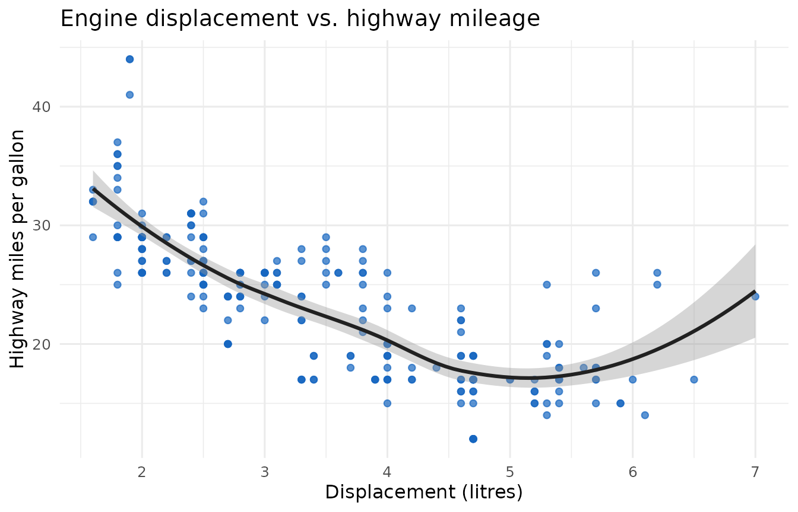

This page renders one of every styled element so the theme can be checked visually in both light and dark mode. Use the toggle at the top right.
Heading level two
Body copy set in Inter. Here is a link to the CTTIR site, some
bold text, some italic text, and inline code
such as pkgdown::build_site() or
x <- c(1, 2, 3) set in JetBrains Mono.
Code
A fenced, evaluated R chunk with output:
fib <- function(n) {
if (n < 2) return(n)
fib(n - 1) + fib(n - 2)
}
vapply(0:10, fib, numeric(1))
#> [1] 0 1 1 2 3 5 8 13 21 34 55And a static YAML block:
Table
| mpg | cyl | disp | hp | drat | wt | |
|---|---|---|---|---|---|---|
| Mazda RX4 | 21.0 | 6 | 160 | 110 | 3.90 | 2.620 |
| Mazda RX4 Wag | 21.0 | 6 | 160 | 110 | 3.90 | 2.875 |
| Datsun 710 | 22.8 | 4 | 108 | 93 | 3.85 | 2.320 |
| Hornet 4 Drive | 21.4 | 6 | 258 | 110 | 3.08 | 3.215 |
| Hornet Sportabout | 18.7 | 8 | 360 | 175 | 3.15 | 3.440 |
| Valiant | 18.1 | 6 | 225 | 105 | 2.76 | 3.460 |
Blockquote
The accent is restrained: it colours links, active navigation, focus rings, and the hex border — never large fills.
Lists
- An ordered item
- Another ordered item
- An unordered item with
inline code - Another unordered item
Figure
library(ggplot2)
ggplot(mpg, aes(displ, hwy)) +
geom_point(colour = "#1565c0", alpha = 0.7) +
geom_smooth(method = "loess", formula = y ~ x, colour = "#212121") +
labs(
title = "Engine displacement vs. highway mileage",
x = "Displacement (litres)", y = "Highway miles per gallon"
) +
theme_minimal(base_size = 12)